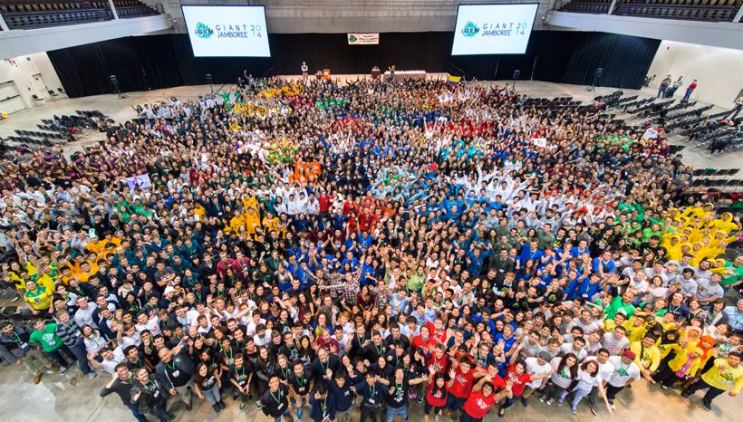
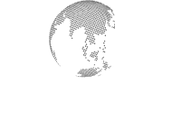

私たちは合成生物学の世界大会iGEM（アイジェム：the international Genetically Engineered Machine competition）に向けて活動している京大チームです。iGEMは学部学生を主体とした大会で、その規模は年々拡大し、2018年度大会では世界各国のおよそ350大学が参加しました。

参加する学生チームは自分たちで立てたテーマに従って、各々の実験スペースで実験を行います。大会までには実験以外にも多くの段階があります。
iGEM本部からのテーマに関する規定は構築した遺伝子を生きた細胞の中で機能させることのみです。独創性のあるアイデアを持ち寄って、必要な実験、遺伝子や予想できるデータなど、得てきたことをプレゼンで発表します。
実験では既存の遺伝子パーツおよび自分たちでデザインした新規遺伝子パーツを用いて生体システムを考案、設計、そして構築し、生きた細胞内で機能させます。基本的なDNAワーク、最先端の実験手法、モデリングなど学部学生ではまず得ることができない「生きた経験」を得ることができます。
iGEMではプロジェクト全体を包括的に説明するWebページを各チーム作成します。実験方法、データなどはすべて審査対象となっているWikiに掲載します。ゼロの状態からWebサイトを立ち上げるのでWebデザインおよびコーディングに関する経験を得ることができます。

合成生物学は新規の学問領域であり、様々な側面でその是非を問う議論が行われています。iGEMでは合成生物学の政治的、経済的、社会的、法的、そして哲学的な背景に関する議論にどれだけ貢献したかも評価対象に含まれ、それがこのHuman and Practice部門で評価されます。毎年ユニークな取り組みが見られ各チームの独自色を前面に押し出せる部門でもあります。

わかりやすさとインパクトを備えたものをめざして、載せるデータやデザイン、構成について推敲を重ねます。 中間発表で、先生方や前年度のメンバーから貴重なアドバイスをいただきます。

アメリカのボストンで開催されるjamboreeで英語によるプレゼンおよびポスターセッションを行います。海外チームとの交流は非常に刺激的で、中には素晴らしい成果を出しているチームもあり「世界トップレベル」を体感することができ、貴重な経験ができます。